Mi nombre es Marco, nací el 12 de noviembre del año 2008 en la ciudad de Durango DGO, mis padres son Jose y Karla y tengo 2 hermanos y dos hermanas uno por parte de mi papá y una hermana por parte de mi mamá y una hermana y hermano menor a fin de la unión de mis padres, desde muy pequeño me gustaba ayudar en casa, jugar, dibujar y hacer manualidades, pero si algo en verdad me gustaba eran las caricaturas, era increíble el tiempo que podía pasar viéndolas y luego jugar a que yo era alguno de esos personajes, entre los 3-4 nació mi hermano Jassan y a los 6 meses de el aver nacido , nos mudamos a León Gto aquí estuve en muchas escuelas, iniciando por el kinder el cual cursé en el kinder ABACO qué está por san pedro, donde sinceramente no me sentí cómodo ya que los niños de mi edad no compartían mis intereses o algunos ni hablar bien sabían y eso me estresaba, justo por esas fechas nació mi hermana menor sabina saliendo de ahí estuve en la primaria nuevo avance donde estuve muy poco tiempo es más creo que solo dure 1 año y en segundo me cambie a una llamada Emiliano zapata, donde estuve también solo un año y finalmente desde 3ro a sexto de primaria en la escuela Enrique Gómez Mena en el turno vespertino, sinceramente en esta última fue donde empecé a realmente congeniar con personas siendo una etapa muy bonita ya que aún frecuento amistades de esa primaria, saliendo de ahí entre a la secundaria técnica número 33 donde estuve 1 año también sin embargo inicio la pandemia así que estuve en clases virtuales, después de que finalizara la cuarentena entre a otra escuela llamada Instituto Pedagógico Azteca donde conocí a muchísimas personas que quiero mucho y tengo una amistad muy buena, dejando esto de lado también eh vivido en varias casas entre ellas destaca cuando viví en la yesca donde igual hice muchos amigos los cuales significan mucho para mi y de echo uno de ellos es mi mejor amigo,
Terminando la secundaria entre a la preparatoria insurgentes actualmente curso el último cuatrimestre y he aprendido muchas cosas tanto personales como habilidades, entre las personales una de ellas es el auto descubrimiento que he hecho en mi, la reflexión y la creación de una filosofía de vida, la cual trato de constantemente ir cuestionado para que mis ideas siempre están claras, de todo esto que he vivido eh aprendido que si bien soy una persona la cual es reservada, soy altamente sociable, puede ser por el cambio constante de situaciones en mi vida, o que así como hago de mis estudios una prioridad, también la recreación y la puesta en práctica de proyectos propios, soy altamente agradecido por quienes me han apoyado amigos y familia y trato de siempre hacer lo mejor por ellos, pues con esto finaliza, espero pronto seguir agregando cosas, faltaron muchas vivencias pero si pienso que esas son suficientes para empezar a conocer a mi persona
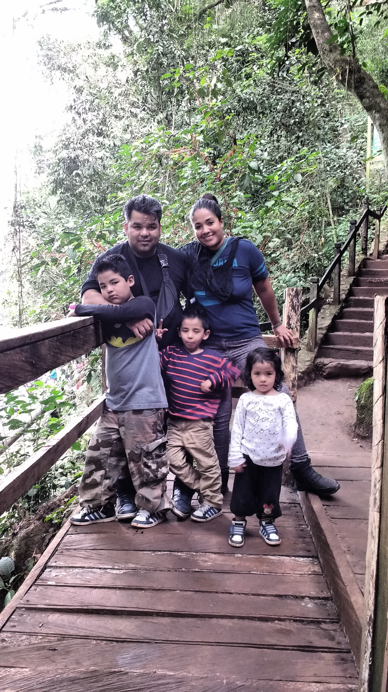
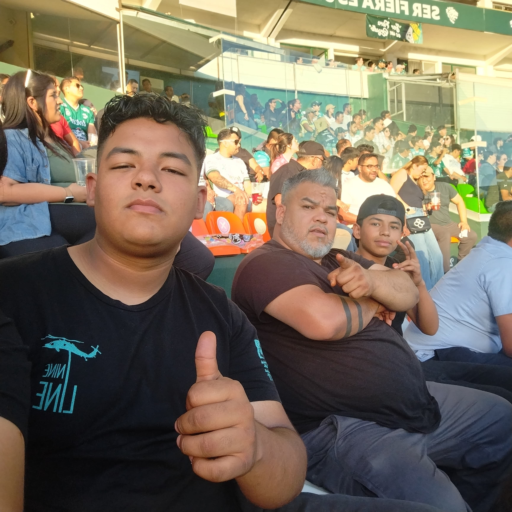
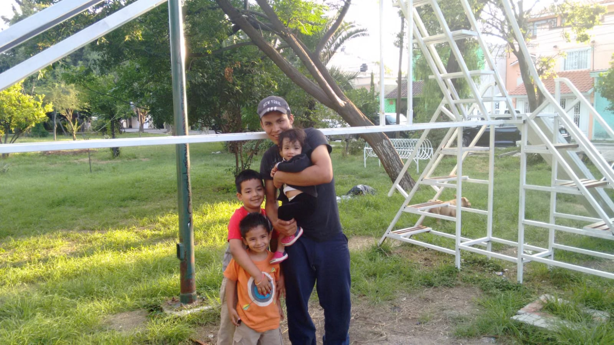
Cuales son mis habilidades
Desde que tengo memoria, siempre me ha interesado entender cómo funciona el
cuerpo humano, por qué nos enfermamos y cómo es posible curar o aliviar a las
personas. A lo largo del tiempo, he descubierto en mí habilidades que considero
muy importantes para estudiar la carrera de medicina, y que además me motivan a
seguir ese camino con compromiso y vocación.
En primer lugar, una de mis principales fortalezas es la empatía. Me gusta escuchar
a los demás, entender lo que sienten y ofrecer apoyo cuando lo necesitan. Creo que
un buen médico no solo trata enfermedades, sino también personas, y saber
ponerse en el lugar del otro es esencial para dar una atención humana y cercana.
He notado que tengo facilidad para conectar con las personas, y eso me hace sentir
útil y comprometido con el bienestar de los demás.
Otra habilidad que considero fundamental es la capacidad de concentración y
análisis. Me gusta prestar atención a los detalles, investigar, leer y aprender cosas
nuevas. La medicina requiere mucho estudio, observación y pensamiento crítico, y
yo me siento cómodo enfrentando desafíos intelectuales. Me gusta hacer preguntas,
entender el porqué de las cosas y buscar soluciones a los problemas. Además,
tengo buena memoria y retención, lo cual considero que será de gran ayuda en una
carrera tan exigente en conocimientos.
También me considero una persona disciplinada y perseverante. Sé que estudiar
medicina no es fácil, y que requiere esfuerzo constante, sacrificios y mucha
dedicación. Pero estoy dispuesto a entregarme de lleno a este camino, porque me
apasiona y sé que vale la pena. No me rindo fácilmente, y cuando algo me importa
de verdad, doy lo mejor de mí hasta lograrlo.
Por otro lado, tengo habilidades para el trabajo en equipo y la comunicación. En
medicina no se trabaja solo; se necesita coordinarse con otros profesionales, saber
escuchar, explicar, colaborar y tomar decisiones en conjunto. Me gusta aportar en
grupo, compartir ideas y aprender de los demás. También soy paciente y sé
mantener la calma en momentos de presión, lo cual considero vital para tomar
decisiones correctas cuando se trata de la salud de alguien.
Finalmente, creo que tengo algo muy importante para esta carrera: vocación de
servicio. No veo la medicina solo como una profesión, sino como una forma de vida
en la que se ayuda a los demás y se aporta al bienestar de la sociedad. Me llena la
idea de poder aliviar el dolor de alguien, acompañar a una familia en momentos
difíciles o contribuir a salvar una vida. Eso es lo que más me motiva y me da
sentido.
Por todo esto, creo que tengo un perfil adecuado para estudiar medicina. Sé que
será un camino largo y exigente, pero también sé que tengo las habilidades, la
actitud y las ganas necesarias para recorrerlo y dar lo mejor de mí en cada paso.
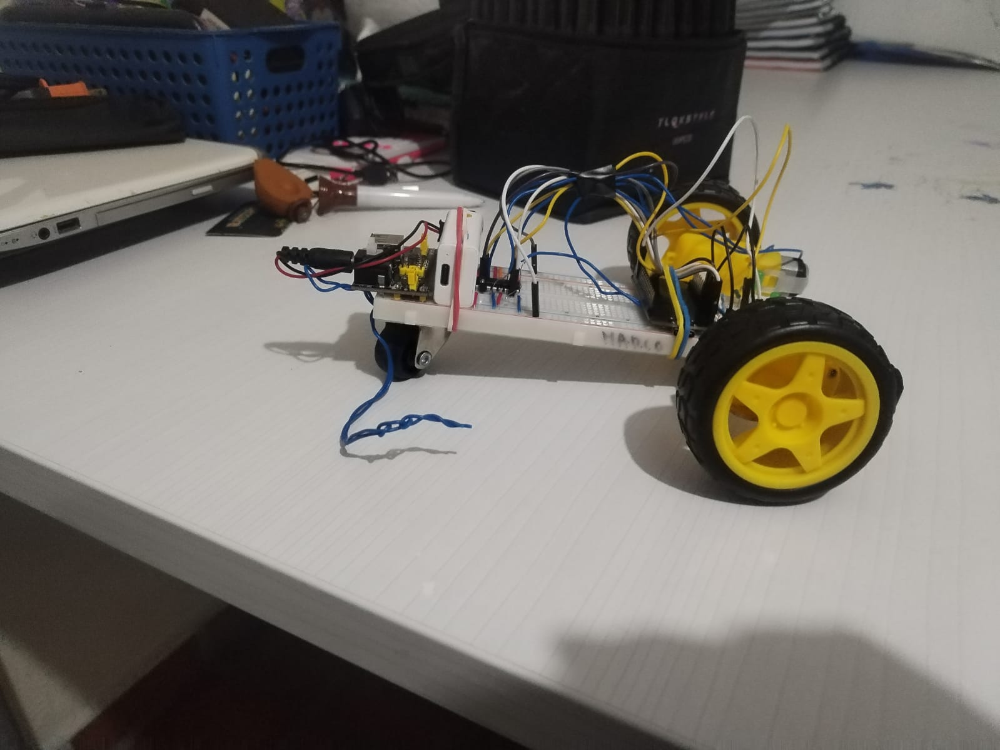
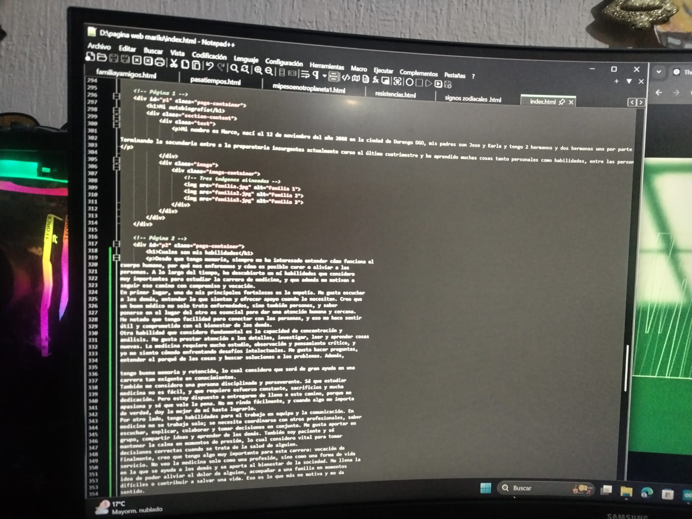
Mis areas de oportunidad
A lo largo del tiempo me he ido conociendo más, y me he dado cuenta de que todos tenemos cosas que podemos mejorar, tanto en lo personal como en lo escolar. Yo no soy la excepción. Tengo sueños grandes, me esfuerzo, me gusta aprender y superarme, pero también reconozco que hay varias áreas de oportunidad en las que tengo que trabajar si realmente quiero alcanzar lo que me propongo, como estudiar Medicina o lograr mis metas en general.
Una de las cosas que más me cuesta es organizar bien mi tiempo. A veces quiero hacer muchas cosas al mismo tiempo, me emociono con proyectos, tareas, ideas nuevas, y al final termino dejando todo para el último momento o saturándome. Eso me ha pasado varias veces y me hace sentir estresado, frustrado o hasta decepcionado de mí mismo. Creo que si aprendiera a planear mejor mis días y a poner prioridades, podría rendir mucho más sin sentirme tan presionado.
Otra área de oportunidad que tengo es la falta de concentración. A veces estoy haciendo algo y cualquier cosa me distrae: el celular, una notificación, una idea que se me cruza, o simplemente empiezo algo y ya estoy pensando en otra cosa. Eso me afecta mucho cuando tengo que estudiar para exámenes o leer cosas largas, porque me cuesta enfocarme completamente y termino leyendo sin retener nada.
También me he dado cuenta de que necesito mejorar mi forma de estudiar. Hasta ahora he estudiado como se me ocurre o como puedo, pero no tengo una técnica fija o efectiva. Ya sea que copie, subraye, o lea varias veces, siento que no siempre me funciona. Y si quiero estudiar Medicina, sé que necesito desarrollar técnicas reales para memorizar, comprender y repasar todo ese montón de información que se ve en esa carrera.
Otra cosa que me gustaría mejorar es mi paciencia y manejo del estrés. Soy una persona que quiere ver resultados rápido, y cuando algo no sale como quiero, me frustro. A veces reacciono con coraje, o simplemente me desmotivo. En algunas situaciones también me gana el impulso y digo cosas que después me hacen pensar “pude haberlo dicho de otra forma”. Todo esto tiene que ver con mi inteligencia emocional, y sé que es algo fundamental, más aún si algún día me voy a dedicar a tratar con personas que están enfermas o en momentos difíciles.
También tengo que seguir trabajando en mi empatía y en cómo me comunico con los demás. No siempre es fácil escuchar con atención, ponerse en los zapatos del otro, o expresar las cosas de forma clara pero respetuosa. A veces uno piensa que está diciendo las cosas bien, pero puede sonar grosero o frío sin querer. Y en Medicina eso puede marcar una gran diferencia, porque un buen trato puede hacer sentir mejor al paciente, incluso más que el medicamento.
Por último, sé que debo mejorar en mi capacidad para leer y entender textos más complejos. En la escuela muchas veces nos piden leer cosas largas o más técnicas, y aunque las leo, a veces no termino de captar bien lo que dicen o se me olvidan muy rápido. Eso es algo que tengo que trabajar desde ahora, porque en la carrera de Medicina se estudian libros enormes, investigaciones, diagnósticos, y es necesario comprenderlos a fondo.
En resumen, mis áreas de oportunidad tienen que ver con cómo organizo mi tiempo, cómo me concentro, cómo estudio, cómo reacciono emocionalmente, cómo trato a los demás y cómo comprendo lo que leo. No lo veo como algo malo, sino como un reto. Son cosas que puedo ir mejorando poco a poco si me lo propongo. Lo importante es que soy consciente de ello, y tengo ganas de crecer y prepararme para lo que viene.
lo largo del tiempo me he ido conociendo más, y me he dado cuenta de que todos tenemos cosas que podemos mejorar, tanto en lo personal como en lo escolar. Yo no soy la excepción. Tengo sueños grandes, me esfuerzo, me gusta aprender y superarme, pero también reconozco que hay varias áreas de oportunidad en las que tengo que trabajar si realmente quiero alcanzar lo que me propongo, como estudiar Medicina o lograr mis metas en general.
Una de las cosas que más me cuesta es organizar bien mi tiempo. A veces quiero hacer muchas cosas al mismo tiempo, me emociono con proyectos, tareas, ideas nuevas, y al final termino dejando todo para el último momento o saturándome. Eso me ha pasado varias veces y me hace sentir estresado, frustrado o hasta decepcionado de mí mismo. Creo que si aprendiera a planear mejor mis días y a poner prioridades, podría rendir mucho más sin sentirme tan presionado.
Otra área de oportunidad que tengo es la falta de concentración. A veces estoy haciendo algo y cualquier cosa me distrae: el celular, una notificación, una idea que se me cruza, o simplemente empiezo algo y ya estoy pensando en otra cosa. Eso me afecta mucho cuando tengo que estudiar para exámenes o leer cosas largas, porque me cuesta enfocarme completamente y termino leyendo sin retener nada.
También me he dado cuenta de que necesito mejorar mi forma de estudiar. Hasta ahora he estudiado como se me ocurre o como puedo, pero no tengo una técnica fija o efectiva. Ya sea que copie, subraye, o lea varias veces, siento que no siempre me funciona. Y si quiero estudiar Medicina, sé que necesito desarrollar técnicas reales para memorizar, comprender y repasar todo ese montón de información que se ve en esa carrera.
Otra cosa que me gustaría mejorar es mi paciencia y manejo del estrés. Soy una persona que quiere ver resultados rápido, y cuando algo no sale como quiero, me frustro. A veces reacciono con coraje, o simplemente me desmotivo. En algunas situaciones también me gana el impulso y digo cosas que después me hacen pensar “pude haberlo dicho de otra forma”. Todo esto tiene que ver con mi inteligencia emocional, y sé que es algo fundamental, más aún si algún día me voy a dedicar a tratar con personas que están enfermas o en momentos difíciles.
También tengo que seguir trabajando en mi empatía y en cómo me comunico con los demás. No siempre es fácil escuchar con atención, ponerse en los zapatos del otro, o expresar las cosas de forma clara pero respetuosa. A veces uno piensa que está diciendo las cosas bien, pero puede sonar grosero o frío sin querer. Y en Medicina eso puede marcar una gran diferencia, porque un buen trato puede hacer sentir mejor al paciente, incluso más que el medicamento.
Por último, sé que debo mejorar en mi capacidad para leer y entender textos más complejos. En la escuela muchas veces nos piden leer cosas largas o más técnicas, y aunque las leo, a veces no termino de captar bien lo que dicen o se me olvidan muy rápido. Eso es algo que tengo que trabajar desde ahora, porque en la carrera de Medicina se estudian libros enormes, investigaciones, diagnósticos, y es necesario comprenderlos a fondo.
En resumen, mis áreas de oportunidad tienen que ver con cómo organizo mi tiempo, cómo me concentro, cómo estudio, cómo reacciono emocionalmente, cómo trato a los demás y cómo comprendo lo que leo. No lo veo como algo malo, sino como un reto. Son cosas que puedo ir mejorando poco a poco si me lo propongo. Lo importante es que soy consciente de ello, y tengo ganas de crecer y prepararme para lo que viene.
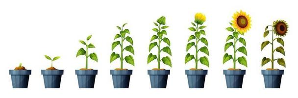
mis metas y a donde quiero llegar
Yo sé que no vine a este mundo para ser uno más del montón. Desde hace tiempo tengo claro que quiero lograr cosas grandes, dejar huella y destacar en lo que haga. No me gusta pasar desapercibido, ni hacer las cosas a medias. Me gusta esforzarme, dar mi opinión, marcar diferencia y que cuando la gente hable de mí diga “esa persona tiene algo distinto”.
Mi meta no es solo tener éxito como lo dicen muchos ya que para empezar creo que mi concepto de exito no es el mismo que tienen todos , y de hecho creo que el concepto que tiene cada uno de eso es propio , para mi es algo mucho mas alla de lo monetario . yo quiero es llegar a un punto donde lo que haga impacte en los demás, donde mi voz, mis decisiones o mi trabajo signifiquen algo real. Me veo como alguien que no solo cumple sus sueños, sino que ayuda a que otros también los cumplan. Alguien que no solo habla, sino que actúa. Alguien que usa su talento para inspirar, para ayudar y para cambiar lo que no le gusta del mundo.
Tengo claro que me gusta el liderazgo, pero no desde un ego, sino desde el ejemplo. También sé que me interesa mucho ayudar a los demás, y por eso una de mis metas más grandes es ser médico. Pero no cualquier médico: quiero ser de esos que realmente marcan una diferencia, que saben escuchar, que tratan con respeto, y que hacen sentir mejor a las personas no solo con una receta, sino con su trato y su presencia.
Al mismo tiempo, no me cierro a una sola cosa. Me gusta hablar, crear, debatir, hacer proyectos, y siento que tengo la capacidad para destacar también como creador de contenido, como emprendedor, o incluso como alguien con impacto en lo social o político. Tengo ideas, tengo carácter y tengo una manera distinta de ver la vida, y eso me motiva a pensar en grande.
Sinceramente, creo que puedo llegar tan lejos como yo quiera. No me hace falta compararme con nadie, porque sé quién soy y de lo que soy capaz. Sé que si me tomo en serio mis metas, si me enfoco y trabajo con disciplina, puedo llegar muy lejos. Y lo mejor es que no quiero hacerlo solo por mí, sino también por los que vienen detrás, por mi familia, por la gente que cree en mí, y por los que tal vez necesitan ver que sí se puede.
No sé exactamente qué camino voy a seguir, pero sí tengo claro que mi destino es hacer algo grande. Estoy decidido a luchar por eso, a prepararme y a no conformarme. Porque no nací para quedarme quieto. Nací para hacer ruido, para romper límites y para dejar mi marca en el mundo.
Mi red de apoyo
Para mí, una red de apoyo es ese grupo de personas en las que puedo confiar, que están conmigo en los momentos buenos y malos, que me levantan cuando me caigo y que me inspiran a seguir adelante. Todos necesitamos una red de apoyo, porque aunque uno sea fuerte, nunca está de más tener a alguien que te dé palabras de aliento, un consejo, o simplemente que te escuche.
Yo considero que mi red de apoyo está compuesta principalmente por mi familia y mis amigos. Mi familia siempre ha estado ahí para mí, apoyándome incluso cuando no lo digo en voz alta. Son los que me conocen de verdad, los que me han visto en mis mejores y peores momentos. Sé que puedo contar con ellos cuando me siento perdido, cuando necesito hablar, o simplemente cuando quiero sentirme acompañado. Aunque a veces no lo exprese, su presencia me da fuerza y seguridad.
Mis amigos cercanos también son una parte muy importante de mi red de apoyo. Ellos son los que entienden mis ideas, mis locuras, mis metas y mis sueños. Con ellos comparto mis dudas, mis emociones, mis victorias y mis frustraciones. Sé que no me juzgan, que me entienden y que están ahí para mí. Son personas con las que puedo ser yo sin máscaras, y eso vale mucho.
Además de ellos, considero que mi red de apoyo también incluye a las personas de las que aprendo. A veces no son personas tan cercanas, pero influyen mucho en mi forma de pensar. Puede ser un maestro que me inspira, alguien que me dio un buen consejo, o incluso personas que sigo y admiro por cómo piensan o actúan. De todos ellos tomo algo, y eso me ayuda a crecer.
Pero hay algo más que he aprendido con el tiempo: yo mismo también soy parte de mi propia red de apoyo. A veces, cuando nadie está cerca, cuando me siento incomprendido o simplemente tengo que enfrentar cosas solo, me doy cuenta de que también puedo contar conmigo. Yo sé lo que quiero, sé lo que he pasado, y sé de lo que soy capaz. He aprendido a hablarme con respeto, a motivarme cuando estoy bajoneado, a exigirme cuando quiero rendirme, y a levantarme cuando me caigo. Yo también me sostengo, y eso para mí es muy valioso.
Reconozco que tener una red de apoyo no significa depender totalmente de los demás, sino saber que no tengo que cargar con todo solo. Es saber que hay personas que creen en mí, que me impulsan, y que también puedo ser esa persona para otros. Y al mismo tiempo, es aprender a confiar en mí mismo, a reconocer mi propio valor, y a seguir construyendo mi camino con la ayuda de los que me rodean, pero también con mi propio esfuerzo.
En resumen, mi red de apoyo está formada por mi familia, mis amigos, las personas de las que aprendo, y sobre todo, por mí. Cada uno de ellos cumple un papel importante en mi vida, y juntos me ayudan a ser quien soy y a seguir creciendo día con día.
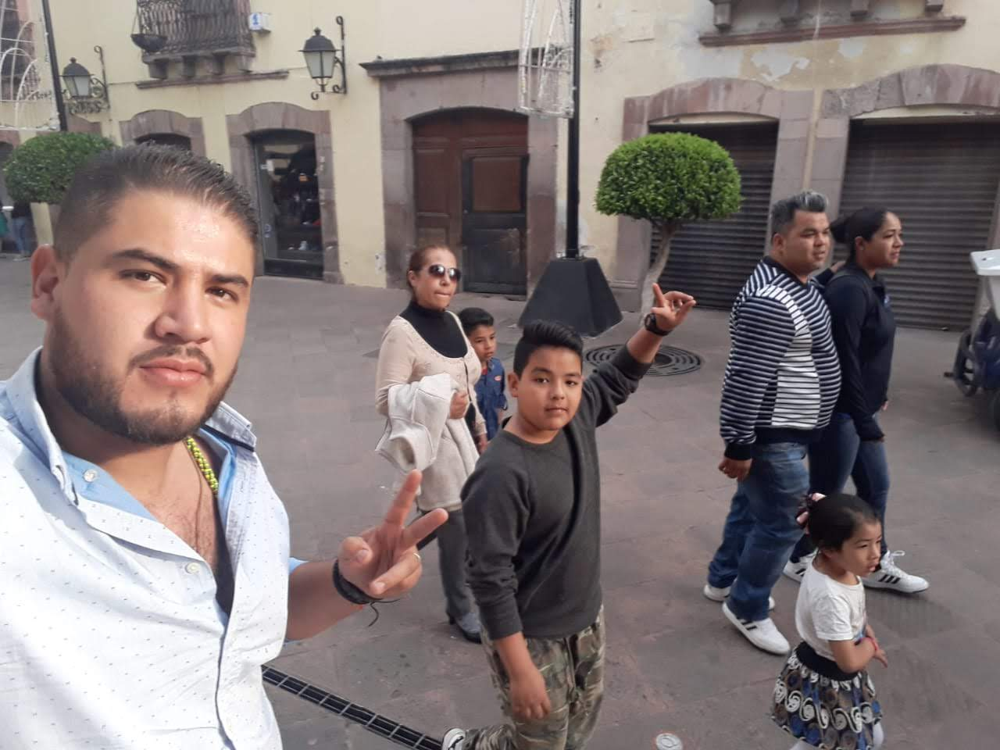
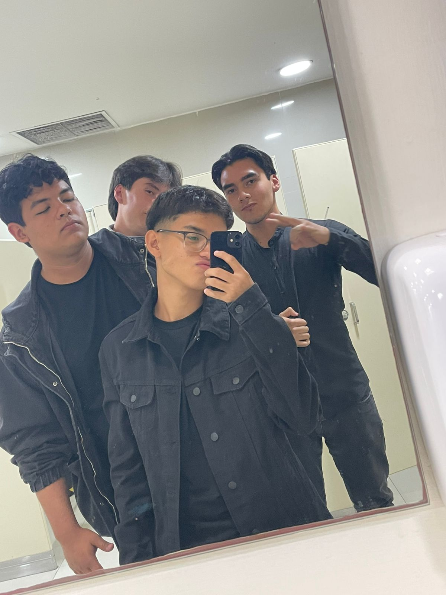
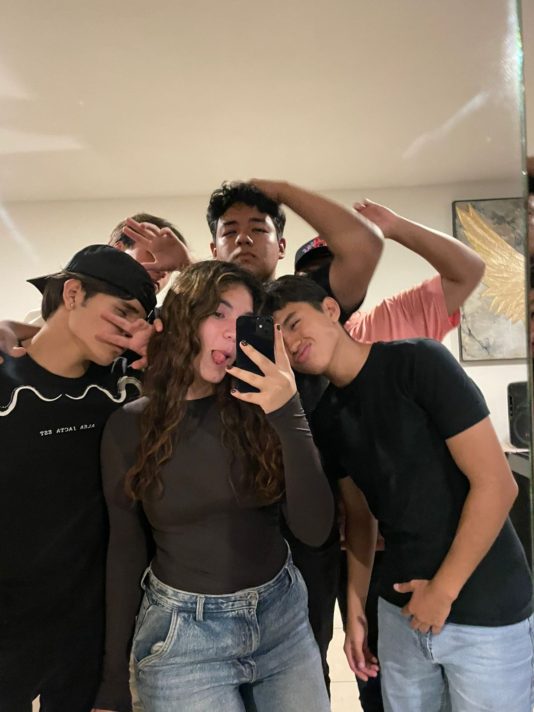
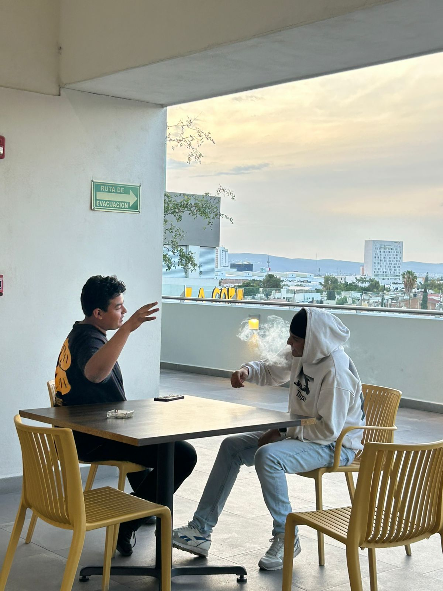
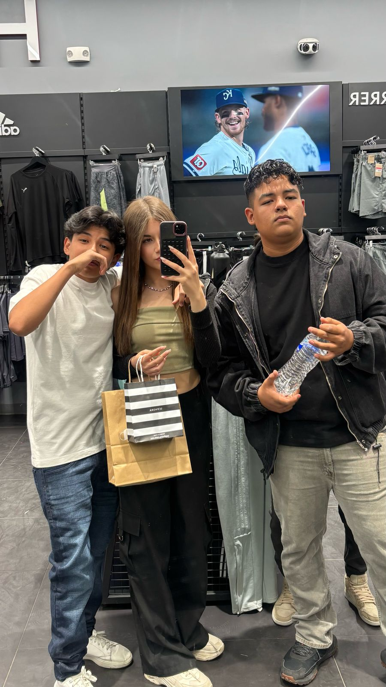
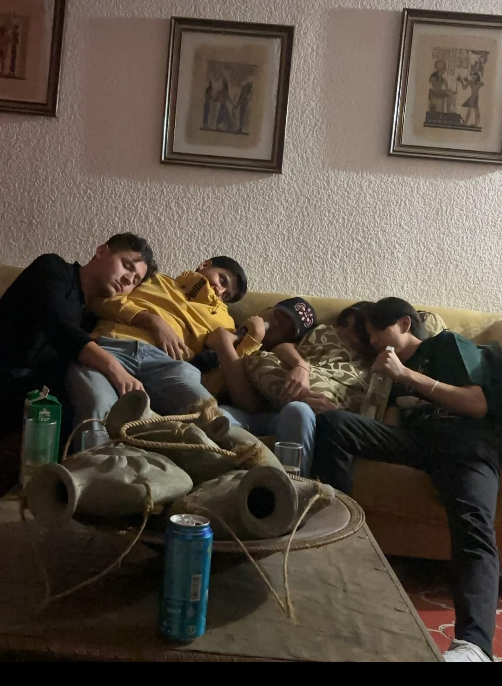
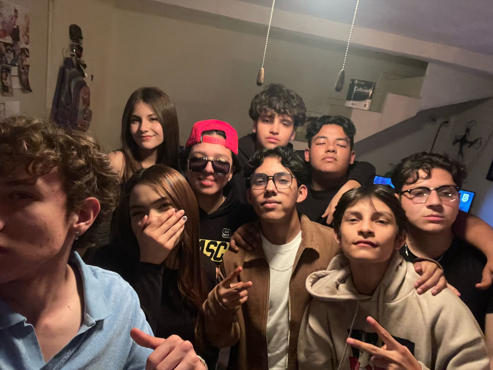
cuales han sido mis logros
primero que nada quiero decir que esta parte es de las que mas dificiles me han parecido sin embargo creo que es indispensable aprender a reconocer nuestros logros
pues realmente poniéndome a analizar , mis logros académicos , son acabar con grados previos , primaria , secundaria y próximamente preparatoria ,de ahi podría decir que conseguir becas en mis escuelas es un logro que no solo me ayuda a mi sino tambien a ,i familia , también he aprendido a ganarse lo mio con mi esfuerzo , desde pequeño mis papás me inculcaron el valor de trabajo y e enseñaron a hacer cosas por lo que quiero ,, cuando sali de la secundaria inicie un negocio donde vendía ropa y articulos de moda entre jóvenes de mi edad y realmente funcionó , generaba bastante dinero , he hecho de ahí conseguía para pagar parte de mi colegiatura pero porque yo quería no porque mis papas no me dieran dinero para pagarlo es es solo que yo sentia que debia pagar lo mío ya que era consciente de lo que significa tener gastos mes con mes y quería que mis papás tuvieran una carga menos , después de eso empecé a trabajar en el negocio de mis donde creo yo fue donde mas why aprendido a trabajar , sinceramente no me gustaria echarme flores como le dicen coloquialmente pero hago en ese local , lo que un adulto deberia depoder hacer y yo lo hago mejor , claro con unas figuras tan estrictas como lo son mis padres pero tan amorosas y comprernsivos es muy dificil no aprender cosas buenas, asi que considero que es es uno de mis logros, deportivamente no eh conseguido mucho la verdad , alguna ves me meti a taekwondo donde consegui a ser cinta azul pero , si me lo preguntas la verdad no creo que sea una habilidad que pueda presumir
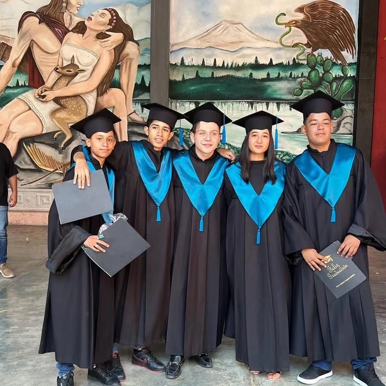
si tuviese un espejo enfrente que le diria
no te preocupes tanto , tu sabes que eres capaz de muchas cosas , ya encontraras el momento para lograrlo,recuerda siempre que eres más fuerte y capaz de lo que crees. tienes un montón de talento, un carácter único y una visión que pocos tienen. No te dejes vencer por las dudas ni por las opiniones de otros. Cada paso, por pequeño que parezca, te acerca a tus sueños. No olvides ser paciente contigo mismo, aprende de los errores sin castigarte y sigue adelante con pasión y determinación. Eres una persona valiosa, con mucho por dar, y el mundo necesita esa versión auténtica y valiente que solo tú puedes mostrar.
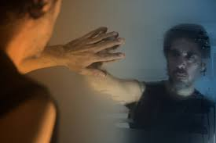
En 5 años, ¿qué me gustaría añadir?
La verdad, no sé exactamente qué me gustaría añadir o lograr dentro de cinco años. A veces siento que me presionan para tener todo claro, para saber qué quiero y hacia dónde voy, pero lo cierto es que no siempre es tan fácil. Creo que la vida es un camino lleno de sorpresas, cambios y aprendizajes que no siempre podemos anticipar.
Lo que sí sé es que en esos cinco años voy a aprender un montón, no solo en la escuela o la universidad, sino en la vida misma. Voy a cometer errores, voy a tener aciertos, y de todo eso voy a sacar enseñanzas que me ayudarán a descubrir qué es realmente importante para mí. El tiempo y el conocimiento que vaya adquiriendo serán mis mejores guías para entender lo que necesito saber y lo que quiero construir.
No me gusta sentir que tengo que tenerlo todo planeado, porque a veces eso genera miedo o ansiedad. Prefiero mantenerme abierto a las oportunidades, a las experiencias nuevas y a las personas que van a aparecer en mi camino. Estoy consciente de que no voy a ser la misma persona que soy hoy, y que eso está bien. Crecer significa cambiar, y ese cambio me ayudará a definir mejor mis metas y mis sueños.
Así que, en lugar de tratar de predecir exactamente qué quiero o qué voy a hacer, prefiero enfocarme en prepararme, en aprender lo más que pueda y en aprovechar cada experiencia que la vida me dé. Sé que, con el tiempo, tendré más claridad, y podré tomar decisiones más conscientes y seguras.
Al final, creo que la clave está en confiar en el proceso, en ser paciente conmigo mismo y en estar dispuesto a adaptarme. Dentro de cinco años, espero poder mirar atrás y ver todo lo que he aprendido, cómo he crecido y cómo he ido construyendo poco a poco la persona que quiero ser.